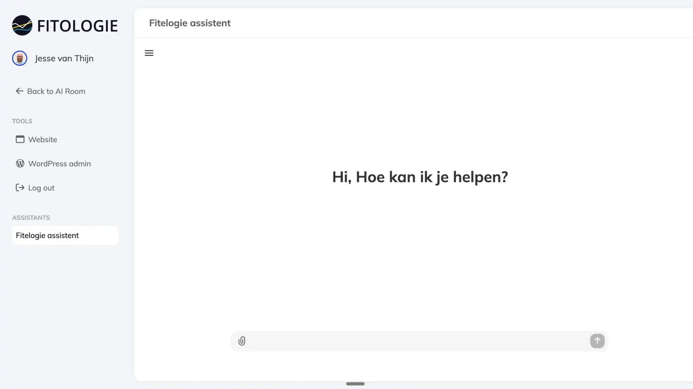

AI is geen doel, maar een middel
AI is geen toekomstmuziek meer, maar het technologische landschap is versnipperd en verandert dagelijks. Veel organisaties blijven hangen in experimenten. Zoek je een AI consultant die niet alleen adviseert, maar ook implementeert? Wij vertalen AI technologie naar werkende oplossingen voor jou en je klanten.
KennismakenAI-oplossingen. Integraties. Automatisering.
We helpen bedrijven slimme stappen te zetten met AI. Of je nu processen wilt versnellen, klanten beter wilt bedienen of tijd wilt besparen. Wij koppelen kunstmatige intelligentie direct aan je bedrijfsdoelen. Geen standaardtools, maar maatwerkoplossingen die écht verschil maken.
-
Elk traject start met inzicht. In interactieve sessies ontleden we je processen en identificeren we de ‘Innovation Waste’. Als AI consultant fungeren we hier als strategisch partner: we scheiden de hype van de waarde en leveren een concrete roadmap.
-
We ontwikkelen slimme assistenten die je team versterken. Denk aan een interne GPT die getraind is op jouw bedrijfsdata, of een service-agent die 24/7 klantvragen afhandelt. Veilig, scherp en volledig eigendom van jouw bedrijf.
-
Advies is mooi, automatisering is beter. Wij koppelen intelligente modellen (LLM’s) direct aan je bestaande software. Hiermee automatiseer je repeterende taken, van documentanalyse tot logistieke planning.
Case
Eigen AI omgeving voor klanten van Fitologie
Fitologie heeft zijn eigen assistent waarin Danny zijn methodiek is verwerkt. Daardoor kunnen klanten vragen stellen en chatten en de assistent geeft recepten en advies net alsof het Danny zelf is.

Veelgestelde vragen
ChatGPT baseert zijn antwoorden op bronnen die helder, actueel en betrouwbaar zijn. Schrijf daarom content die concrete vragen beantwoordt, zorg dat je website technisch goed vindbaar is en laat duidelijk zien waar je expertise ligt.
Stel je eigen vragen in ChatGPT en kijk of je content verschijnt. Gebruik daarnaast tools zoals Google Search Console om zichtbaarheid te meten.
Dat bepaal je samen met ons vooraf. We leggen vast welke data een model mag gebruiken, waar die wordt verwerkt en wie er toegang toe heeft, en bouwen de integratie daaromheen. Veilig, scherp en volledig eigendom van jouw bedrijf.
Een AI-tool is een kant-en-klaar product dat je los van je werk gebruikt, zoals een chatbot in je browser. Een AI-integratie koppelt AI direct aan je bestaande software en processen, zodat het automatisch meedraait in je dagelijkse werk.
Bij SEO draait het om een hoge positie in een lijst met zoekresultaten. Bij vindbaarheid in ChatGPT gaat het erom dat jouw bedrijf wordt genoemd in het antwoord zelf. Dat vraagt om duidelijke, betrouwbare content en een sterke online aanwezigheid, naast goede SEO.
Nee. Juist kleinere teams winnen vaak veel tijd door repeterende taken te automatiseren. We beginnen klein, met een concrete use case, en schalen pas op als het werkt.